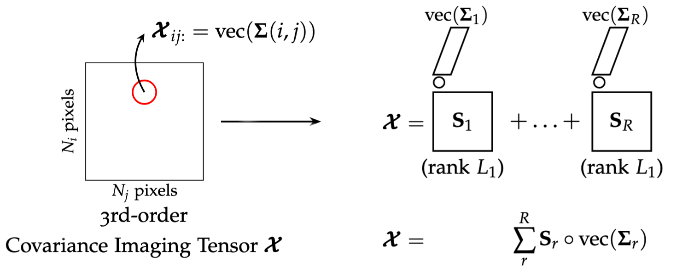
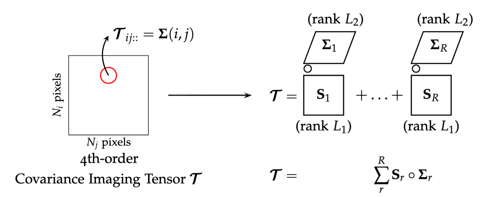

pyBBTD docs#
pyBBTD implements two tensor decomposition models: Cov-LL1 and BBTD.
Cov-LL1 is a third-order tensor decomposition model specifically tailored for covariance-valued imaging tensors, i.e., data in which each pixel is associated with a covariance matrix. It can be seen as a constrained LL1 model.
In mathematical form, Cov-LL1 decomposes a third-order tensor \(\mathcal{X}\) as:
where:
\(R\) is the number of components.
\(\mathbf{A}_r \in \mathbb{R}^{I \times L_1}\) and \(\mathbf{B}_r \in \mathbb{R}^{J \times L_1}\) represent spatial (non-negative) factor matrices of rank \(L_1\), and
\(\mathbf{c}_r \in \mathbb{R}^{K^2}\) is a vectorized \(K \times K\) covariance matrix associated with the \(r\)-th component.
One can choose the \(R\) (number of components) and \(L_1\) (spatial rank) up to certain identifiability conditions (checked by pyBBTD). Here is an illustration of the Cov-LL1 model:
BBTD is a fourth-order tensor decomposition model that represents data as a sum of two blocks: a spatial component with rank \(L_1\) and a covariance component with rank \(L_2\). The user can choose \(R\) (number of components), \(L_1\) (spatial rank), and \(L_2\) (covariance rank), up to certain identifiability conditions (checked by pyBBTD).
In mathematical form, BBTD decomposes a fourth-order tensor \(\mathcal{T}\) as:
where:
\(R\) is the number of components.
\(\mathbf{A}_r \in \mathbb{R}^{I \times L_1}\) and \(\mathbf{B}_r \in \mathbb{R}^{J \times L_1}\) represent spatial factor matrices of rank \(L_1\), and
\(\mathbf{C}_r\mathbf{C}_r^{H} \in \mathbb{C}^{K \times K}\) is the covariance matrix of the \(r\)-th component, with each \(\mathbf{C}_r \in \mathbb{C}^{K \times L_2}\)
The figure below illustrates the structure of the BBTD model.
For more details about Cov-LL1 and BBTD models, please refer to the chapters 3 and 4, respectively, of the following thesis.